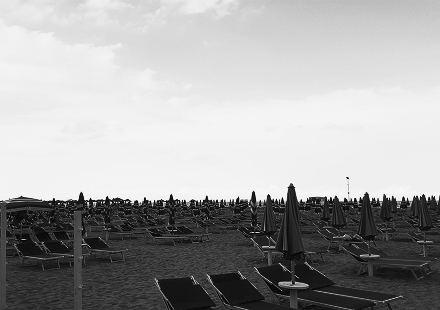
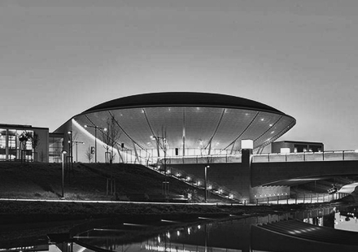
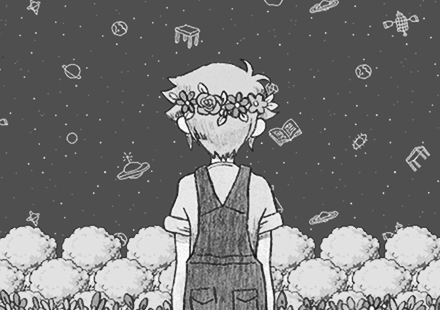
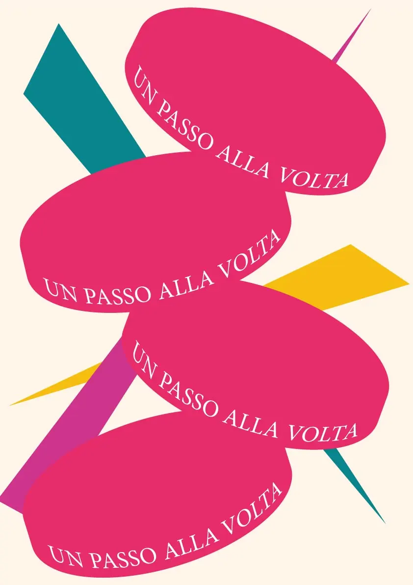
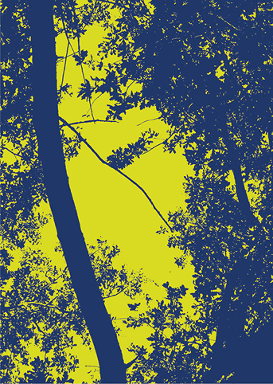
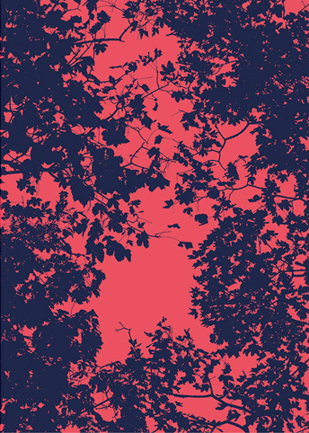
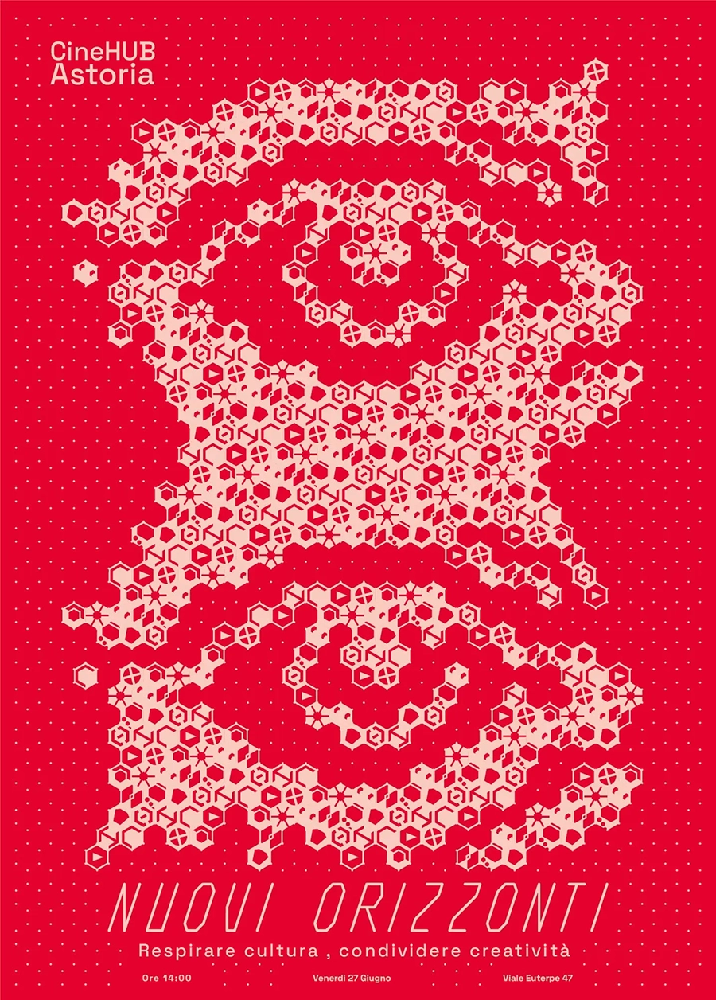

Posters
Tra i miei lavori personali vi sono anche poster, coi quali cerco di trasmettere emozioni e stimolare curiosità.

Il paesaggio che trovo più vicino a me è il mare. Non per il divertimento, o per la festa, ma per il senso di pace che mi infonde, per il suono delle onde: Un posto, neella mia mente, pacifico.

Vivendo nel cuore di Rimini, ho sempre trovato il Palacongressi come una struttura aliena, ma affascinante. Nonostante le sue peculiarità non risulta cacofonica, e vive in simbiosi con i dintorni.

Da sempre sono appassionato di videogiochi, uno dei medium più incompresi. Possono infatti essere, al di là di semplici passatempo, dei mezzi di comunicazione complessi, intricati e immersivi.

Tra i miei lavori personali vi sono anche poster, coi quali cerco di trasmettere emozioni e stimolare curiosità.


Una raccolta di foto di cielo e natura manipolate in maniera imprevedibile, dando vita a una rappresentazione di territori fantastici, mappe territoriali immaginarie piene di colori, utilizzati consuetamente in mappe e foto geografiche.

Una raccolta di foto di cielo e natura manipolate in maniera imprevedibile, dando vita a una rappresentazione di territori fantastici, mappe territoriali immaginarie piene di colori, utilizzati consuetamente in mappe e foto geografiche.